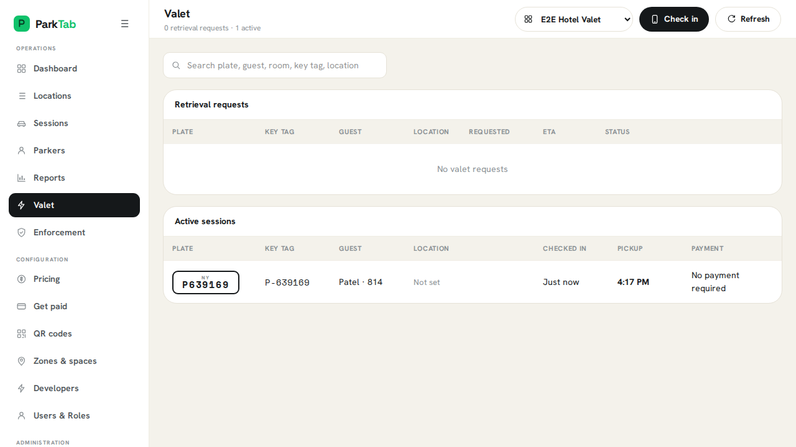
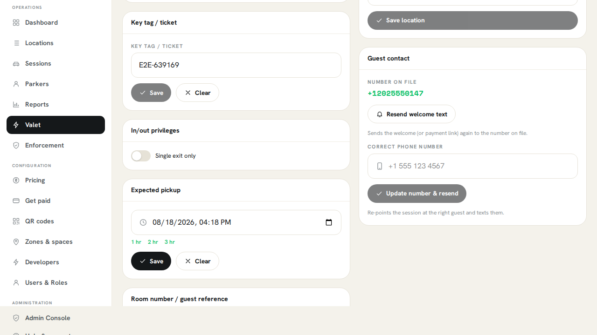
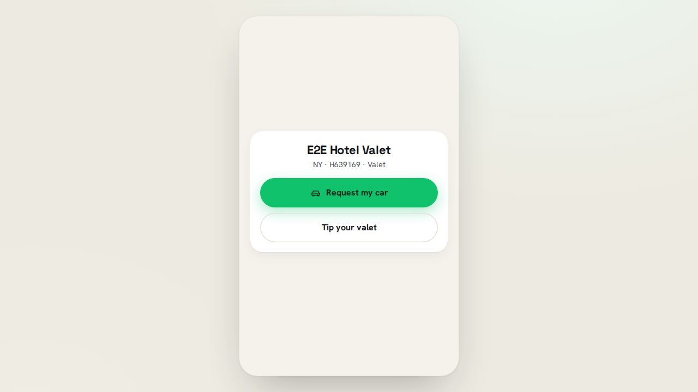
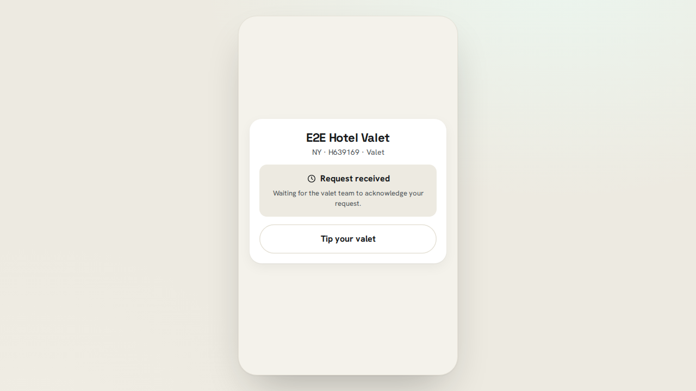
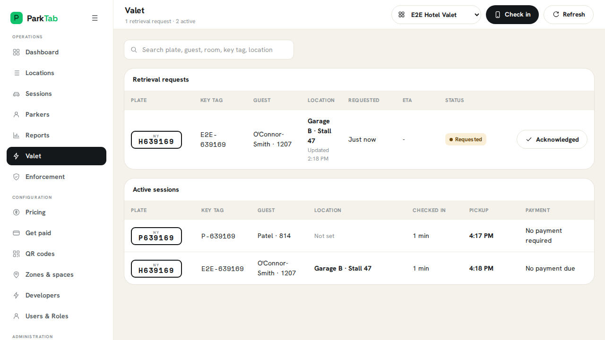
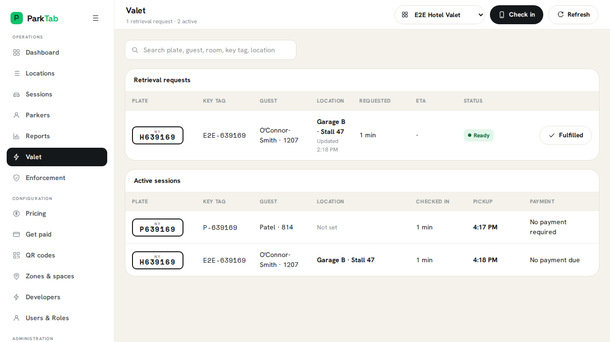

valet.guest-request-lifecycle
Request-to-handoff lifecycle
A guest requests their car while the operator queue updates through acknowledge, retrieve, ready, and returned states.
ConsumerWeb Desktop
What this flow shows
- Update the valet queue in realtime
- Keep the guest informed through handoff
- Audience
- Hotel, Valet Operator, Property Manager
- Fixture
guest-self-park-controlled-payment- Build
source-4b23dfa8- Captured
- Aug 18, 2026
Web Desktop capture
7 captured moments
Default
Controlled Demo
Primary video
Guest video
Composed video
1 / 7

Operator Valet Board
Primary view

Guest Checked In And Vehicle Located
Primary view

Guest Live Valet Session
Guest view · The tokenized link opens without an account.

Guest Requests The Vehicle
Guest view

Request Appears In The Operator Queue
Primary view · The already-open board receives the request through realtime invalidation.

Vehicle Ready For Handoff
Primary view
Retrieval Completed
Primary view